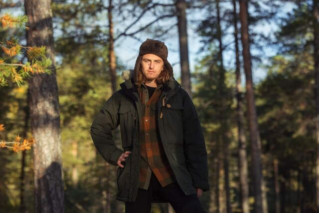
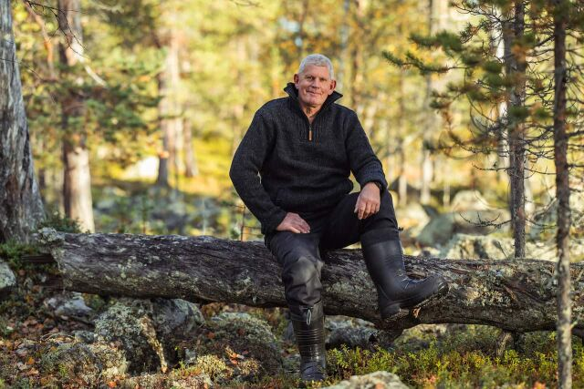
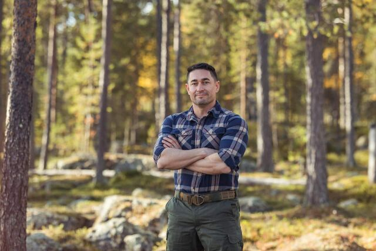
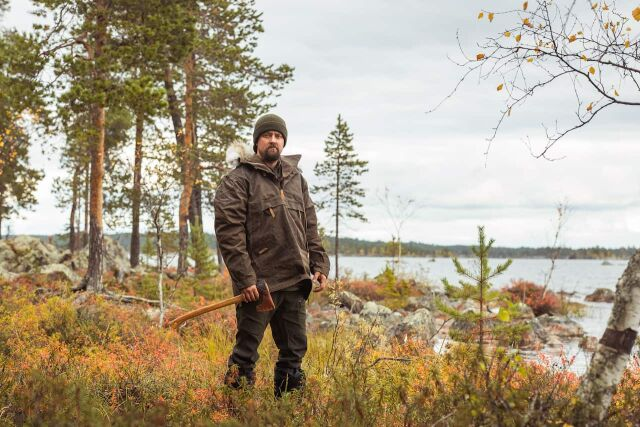
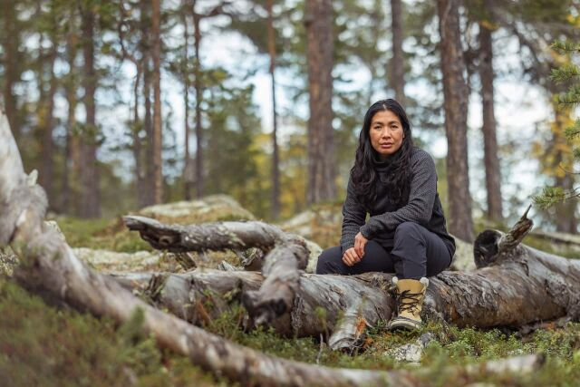
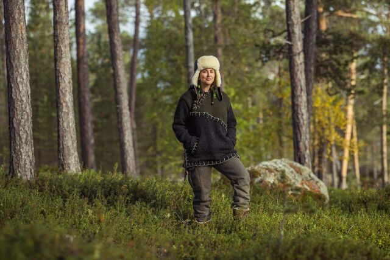
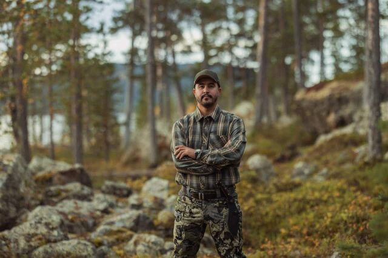
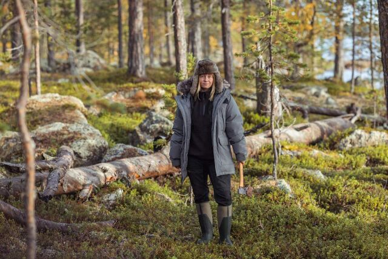
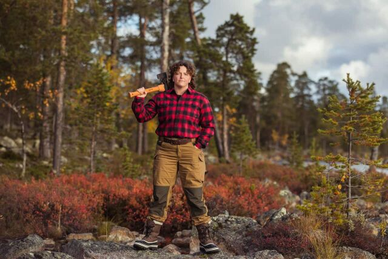

1stWinner
1stWinnerTrent Fenton
Ex Navy Chef
- Lasted
- 52 days
- Age
- 39
- From
- Sandford, Tasmania
Loadout
- Sleeping Bag
- Pot
- Ferro Rod
- Bow and Arrows
- Fishing Kit
- Saw
- Axe
- Multitool
- Rations
- Gill Net
Alone Australia
Sapmi, Lapland, Finland · Premiered 15 Jul 2026
Days each survivalist lasted, in finishing order, and why they tapped out. Every season page uses the same 0–100 day scale so seasons can be compared at a glance.









Who they are, where they're from and the ten items they carried in.
1stWinnerEx Navy Chef
Loadout
Permaculture Practitioner & Educator
Sheep And Cattle Farmer
Domestic & Family Violence High Risk Team Specialist
Electrician
Design Project Consultant/Ultramarathon Runner
Aboriginal Community Engagement Senior Advisor
Wrecking Yard Manager
International Outdoor Guide
Adventure Tour Guide
How many survivalists chose each item (items grouped into simplified categories).
Loadout data available for 1 of 10 survivalists.
Air dates, survivalists remaining at the start of each episode, viewers and IMDb rating.
| Ep | Title & opening quote | Aired | Remaining | Viewers (M) | IMDb |
|---|---|---|---|---|---|
| 1 | Episode 1“Winter is coming.” — George RR Martin | 15 Jul 2026 | 10 | 0.23 | |
| 2 | Episode 2“The mind...is a landscape in which getting lost is easy and some regions are terrifying to visit.” — Rebecca Solnit | 15 Jul 2026 | 10 | 0.23 | |
| 3 | Episode 3“The question is not what you look at, but what you see.” — Henry David Thoreau | — | 10 | — | |
| 4 | Episode 4“He who has rowed little has weak arms.” — Sámi proverb | — | 9 | — | |
| 5 | Episode 5“Nothing like an empty stomach to remind you what you are.” — Charles Yu | — | — | — | |
| 6 | Episode 6“the snow doesn't give a soft white damn Whom it touches” — E. E. Cummings | — | — | — | |
| 7 | Episode 7“Only those who will risk going too far can possibly find out how far one can go.” — T. S. Eliot | — | — | — | |
| 8 | Episode 8“You mustn't confuse a single failure with a final defeat.” — F. Scott Fitzgerald | — | — | — | |
| 9 | Episode 9“Reality exists in the human mind, and nowhere else.” — George Orwell | — | — | — | — |
| 10 | Episode 10 | — | 3 | — | — |